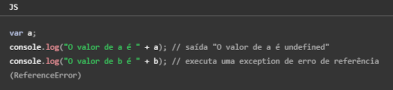
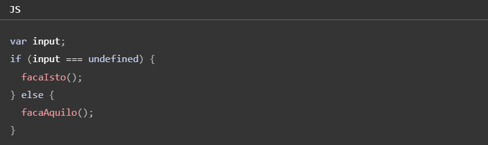
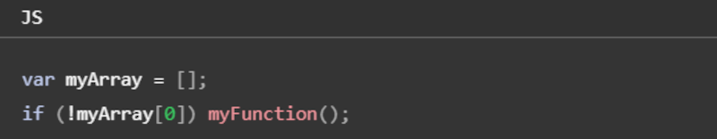
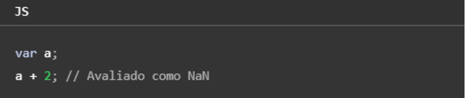
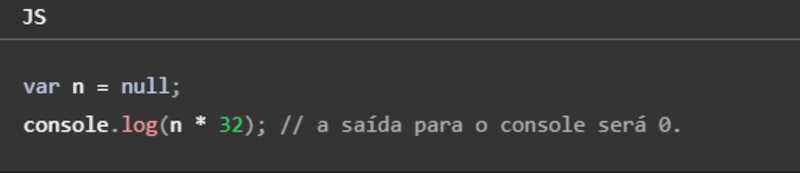
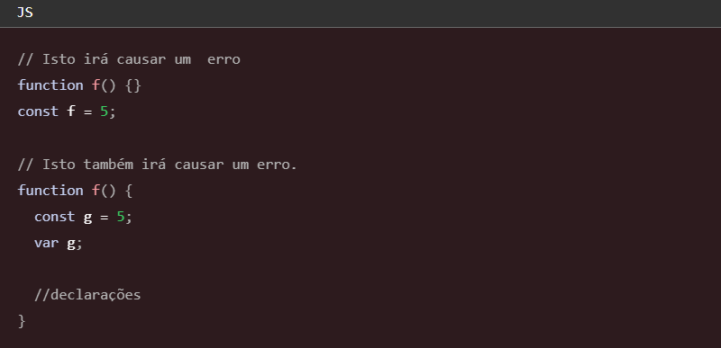

Para criar as variáveis usamos nomes simbólicos para os valores em sua aplicação, o nome das variáveis não podem começar com números, porém podem começar com uma letra qualquer (maiúscula ou minúscula), sublinhado (_), ou cifrão ($), já os carateres subsequentes podem ser números. Exemplo: (nome / _idade / $salario / vaga1).
Podemos declarar uma variável de duas formas:
Se você criar uma variável e não especificar o valor inicial, ela irá ter o valor undefined, já se você tentar acessar um variável inexistente, resultará no lançamento de uma exeção ReferenceError, exemplo:

Você pode usar undefined para determinar se uma variável tem um valor. No código a seguir, não é atribuído um valor de entrada na variável e a declaração if será avaliada como verdadeira (true).

O valor undefined se comporta como falso (false), quando usado em um contexto booleano. Por exemplo, o código a seguir executa a função myFunction devido ao elemento myArray ser indefinido:

O valor undefined coverte-se para NaN (Not A Number) quando usado no contexto numérico.

Quando você avalia uma variável nula (null), o valor nulo se comporta como 0 em contexto numéricos, e como falso (false) em contextos booleanos.

Constantes
Você pode criar uma constante apenas de leitura por meio da palavra-chave const. A sintaxe de um identificador de uma constante é semelhante ao identificador de uma variável: o nome de uma constante não pode começar com números, porém podem começar com uma letra qualquer (maiúscula ou minúscula), sublinhado (_), ou cifrão ($), já os carateres subsequentes podem ser números. Uma constante não pode alterar seu valor por meio de uma atribuição ou ser declarada novamente enquanto o script está em execução, deve ser inicializada com um valor.
As regras de escopo para as constantes são as mesmas para as váriaveis let de escopo de bloco. Se a palavra-chave const for omitida, presume-se que o identificador represente uma variável. Você não pode declarar uma constante com o mesmo nome de uma função ou variável que estão no mesmo escopo.

Tipos primitivos
Os tipos primitivos em JavaScript são valores simples e imutáveis, são usados para representar informações básicas e usuais, conseguimos identificar qual é o tipo primitivo utilizando typeof, agora segue os 7 tipos de dados:
Converter o tipo primitivo de um elemento
Number.parseInt( ) → converte para Number = número inteiro
Number.parseFloat( ) → converte para Number = número real
Number( ) → converte para Number = próprio JS decide se é inteiro ou real
String( ) → converte para String
_.toString() → converte para String
Formatando String
.length → quantos caracteres a string tem
.toUpperCase( ) → tudo para maiúscula
.toLowerCase( ) → tudo para minúscula
.split( ) → divide
.push( ) → adiciona
Formatando Números
.toFixed(n°) → n° p/ qnt de casas decimais
.replace(' ', ' ') → troca caracteres
.toLocaleString('pt-BR', {style: 'currency', currency: 'BRL'}) → formata o número em valor monetário (.toLocaleString = string localizada / 'pt-BR' = localiza em português / style: currency = mostrar em valor monetário / currency: 'BRL' = real brasileiro)
new Date() → mostra dia, mês, ano, data e hora atual
new Date() + .getHours → mostra o horário atual
new Date() + .getMinutes → mostra o minuto atual
new Date() + .getSeconds → mostra o segundo atual
new Date() + .getMilliseconds → mostra o milissegundo atual
new Date() + .getDay → mostra o dia da semana atual
new Date() + .getDate → mostra o dia do mês atual
new Date() + .getMonth → mostra o mês atual
new Date() + .getFullYear → mostra o ano atual
Acessar / selecionar elementos HTML
document.getElementsByTagName(' ') → seleciona o(s) elemento(s) pelo nome da tag / ex: .getElementsByTagName('p'), seleciona todas as tags <p>, se quiser escolher somente uma dessas tags <p> colocar o número equivalente, ex: [0] p/ primeira tag <p>, [1] p/ segunda tag <p> e assim adiante...
document.getElementById(' ') → selecionar o elemento pelo ID / ex: .getElementById('inum'), seleciona o elemento que tem o id="inum"
document.getElementsByName(' ') → seleciona o(s) elemento(s) pelo nome da propriedade name=" " / ex: .getElementsByName('num1'), seleciona o(s) elemento(s) que tem a propriedade name="num1"
document.getElementsByClassName(' ') → seleciona o(s) elemento(s) pelo class / ex: .getElementsByClassName('msg'), seleciona o(s) elemento(s) que tem o class='msg'
document.querySelector(' ') → seleciona o elemento específico / ex: .querySelector('div.img'), seleciona a tag <div> com o class="img"
document.querySelectorAll(' ') → seleciona o(s) elemento(s) específico(s) / ex: .querySelectorAll('.msg'), seleciona todos os elementos que tem o class="msg"
Outros
document.createElement(' ') → cria um elemento HTML/ ex: .createElement('img'), cria um elemento <img>
.setAttribute(' ') → cria um atributo para a tag escolhida / ex: img.setAttribute('id', 'foto'), cria um id="foto" para a tag <img>
.appendChild(' ') → adiciona um elemento filho / ex: div.appendChild(img), adiciona a tag <img> dentro da tag <div>
document.TAG_HTML.style.CSS = ' ' → altera o estilo CSS de uma tag HTML / ex: document.div.style.background = '#000', muda cor de fundo da tag <div>
Estrutura de controle condicional
if → significa se, ex: if (idade < 18) { ... } = se idade for menor que 18 faça...
else → significa senão, ex: else { ... } = senão faça... (só executa se o if for falso)
else if → significa senão se, é utilizado quando tem mais que uma opção para a escolha do if
switch → significa trocar, especifica diversos blocos alternativos para serem executados, ex: switch (expressão) { case 'a': ... break; case 'b': ... break; default: ... } = trocar, se for 'a' faça... pare; se for 'b' faça... pare; senão faça... pare.